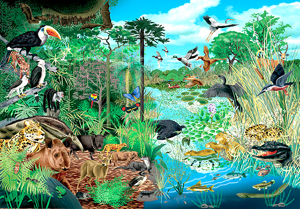
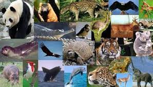

ANTERIOROMENTE ESTUDIAMOS QUE ES LA SINECOLOGIA, COMO TAMBIEN SE LE CONOCE A LA ECOLOGIA DE LAS COMUNIDADES; SIN EMBARGO, DEBEMOS RECORDAR SU SIGNIFICADO
AL HABLAR DE LAS RAMAS DE LA ECOLOGIA, PUESTO QUE TIENE UN GRAN PAPEL EN EL CAMPO BIOLOGICO.
ESTA RAMA SE ENCARGA DE ESTUDIAR LAS INTERACCIONES QUE SURGEN ENTRE LAS COMUNIDADES BILOGICAS Y SUS HABITATS.

EN ECOLOGÍA, UNA COMUNIDAD ES UN GRUPO O ASOCIACIÓN DE POBLACIONES DE DOS O MÁS ESPECIES DIFERENTES QUE OCUPAN LA MISMA ÁREA GEOGRÁFICA AL MISMO TIEMPO,
TAMBIÉN CONOCIDA COMO BIOCENOSIS. EL TÉRMINO COMUNIDAD TIENE UNA VARIEDAD DE USOS..
POR QUÉ ES IMPORTANTE LA ECOLOGÍA EN LA COMUNIDA:
LA ECOLOGÍA ES LA CIENCIA QUE ESTUDIA A LAS RELACIONES ENTRE LOS SERES VIVOS Y CON EL MEDIO AMBIENTE. ES MUY IMPORTANTE PORQUE LE HA
ENSEÑADO AL SER HUMANO A COMPRENDER Y VALORAR SU ENTORNO, Y A DIMENSIONAR CUÁNTO IMPACTO GENERA SU ACCIONAR.
CUÁLES SON LAS CARACTERÍSTICAS DE UNA COMUNIDAD ECOLÓGICA:
EN ECOLOGÍA SE LE CONOCE COMO COMUNIDAD O BIOCENOSIS AL CONJUNTO DE POBLACIONES ORDENADAS E INTERRELACIONADAS QUE HABITAN EN UN
ÁREA DETERMINADA EN UNA ÉPOCA CONCRETA. LA COMUNIDAD TIENE UN TAMAÑO DEFINIDO, LÍMITES, PRESENTA DIVERSIDAD, UNA ESTRUCTURA Y BIOMASA.
CUÁLES SON LAS CARACTERÍSTICAS DE LA COMUNIDAD ECOLOGICA:
UNA COMUNIDAD ES UNA ZONA O UN LUGAR RECONOCIBLE, COMO UNA CIUDAD, UN POBLADO, UN VECINDARIO, O INCLUSO UN LUGAR DE TRABAJO.
ESTE ESTUDIO TAMBIÉN IDENTIFICÓ "COMPARTIR INTERESES Y PERSPECTIVAS COMUNES" COMO PARTE DE PERTENECER A UNA COMUNIDAD.

CÓMO SE CLASIFICAN LAS COMUNIDADES EN ECOLOGÍA:
SEGÚN EL TIPO DE ORGANISMOS VIVOS QUE LA COMPONEN, EXISTEN DIFERENTES TIPOS DE COMUNIDADES BIOLÓGICAS, TALES COMO: FITOCENOSIS
(ESPECIES VEGETALES), ZOOCENOSIS (ESPECIES ANIMALES), MICROBIOCENOSIS (MICROORGANISMOS).
CUÁLES SON LAS COMUNIDADES QUE CONFORMAN EL ECOSISTEMA:
UNA COMUNIDAD ES EL CONJUNTO DE TODAS LAS POBLACIONES BIOLÓGICAS DE DIFERENTES ESPECIES QUE HABITAN E INTERACTÚAN EN UNA MISMA ZONA.
CUANDO CONSIDERAMOS UNA COMUNIDAD BIOLÓGICA EN SU HÁBITAT O AMBIENTE NATURAL, ESTAMOS ESTUDIANDO UN ECOSISTEMA.
CUÁL ES LA DIFERENCIA ENTRE LAS COMUNIDADES Y LOS ECOSISTEMAS:
LAS COMUNIDADES REPRESENTAN AL CONJUNTO DE ESPECIES EN UN LUGAR DADO, SU ESTRUCTURA, SUS FORMAS DE ORGANIZACIÓN. LOS ECOSISTEMAS
SON ANALIZADOS A PARTIR DE SU FUNCIONAMIENTO